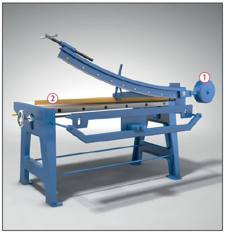
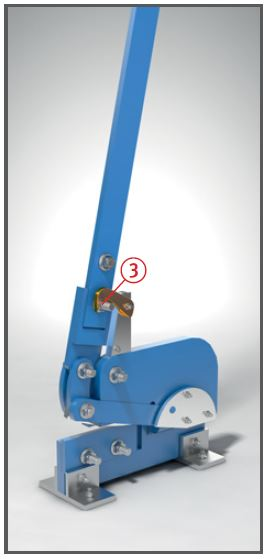

Handbetriebene
Scheren und Stanzen

Gefährdungen
Beim Umgang mit Scheren kann es zu Schnittverletzungen und Verletzungen durch Anstoßen an vorstehenden oder sich selbsttätig bewegenden Maschinenteilen kommen.
Schutzmaßnahmen
Maschinen sicher und leicht zugänglich aufstellen.
Zulässige Schnittleistung beachten, verschlissene Messer austauschen.
Geeignete Blechhebezeuge verwenden.
Arbeitsplatz von Abfällen freihalten.
Bei der Handhabung von Blechen schnittfeste Handschuhe tragen.
Zusätzliche Hinweise
Schlagscheren
Gegengewicht am Messerbalken so ausbalancieren und unverschiebbar feststellen, dass das bewegliche Obermesser nicht selbsttätig niedergehen kann
.
Schnittlinie auf ganzer Länge durch Schutzleiste oder Balkenniederhalter abdecken
.

Handhebelscheren und Handhebelstanzen
Hochgestellte Hebel in Ruhestellung und gegen unbeabsichtigtes Herabfallen sichern
.
Bei der Aufstellung von Hebelscheren auf eventuelle Quetsch- und Scherstellen, auch während des Schneidvorganges, achten.
Werkstück durch Niederhalter gegen Hochkanten sichern.
Weitere Informationen:
Betriebssicherheitsverordnung
DGUV Regel 100-500 Betreiben von Arbeitsmitteln
DGUV Information 209-019 Sicherheit bei der Blechverarbeitung
07/2019